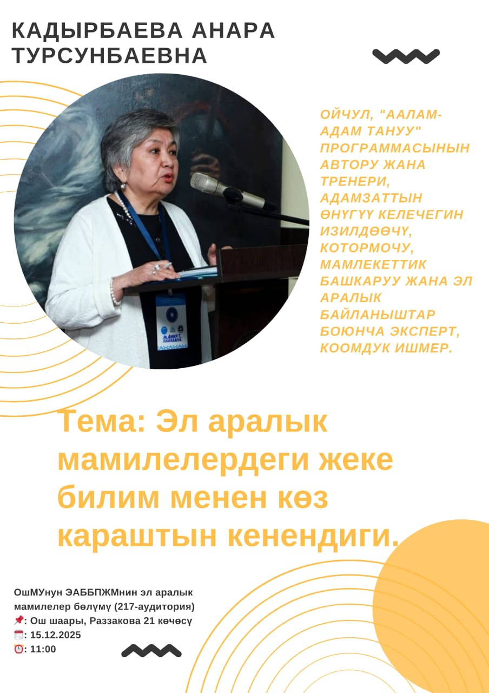

Мыслитель · Консультант · Коуч · Общественный деятель · Переводчик
Автор программы «Аалам-Адам Тануу», исследователь будущего человеческой цивилизации, эксперт по международным отношениям и государственному управлению.
Пригласить на выступление
О себе
Общественный деятель, консультант, коуч, переводчик и наставник — Анара Кадырбаева посвятила жизнь изучению природы человека и путей развития цивилизации.
Родилась в 1955 году в Оше. Окончила Ошский государственный университет по специальности «Мировые языки». Прошла курсы в Академии «Новая Эра» (Индия) и Бразильском Институте Мира.
Работала в системе ООН и ОБСЕ, возглавляла отдел внешних связей мэрии Оша, была административным переводчиком посольств Индии и Пакистана. С 2011 года ведёт дискуссионные семинары «4U» («Сага») по познанию мироздания и человека. Проводит семинары и даёт лекции по разрешению межличностных конфликтов, гармонизации отношений внутри коллективов, повышению эффективности через командообразование.
Почётное звание «Посол Мира» — член международного сообщества бахаи. Лауреат номинации «Лучшая женщина-дипломат — 2020».
Авторская программа
Программа «Аалам-Адам Тануу» — кыргызское словосочетание, означающее познание мироздания и человека. Это авторская система взглядов, объединяющая философию, духовность, историю цивилизаций и практику осознанного развития личности.
В её основе — убеждение: глубокое самопознание человека неотделимо от понимания мира, в котором он живёт.
С 2011 года программа реализуется через дискуссионные семинары «4U» в Бишкеке и Оше, а также через публичные лекции и выступления на международных площадках.
Ключевые темы
Карьера
Международная деятельность
Контакт
Лекции, дискуссионные панели, семинары, международные форумы — по темам госуправления, международных отношений, цивилизационного развития и культурного наследия.
Написать письмо